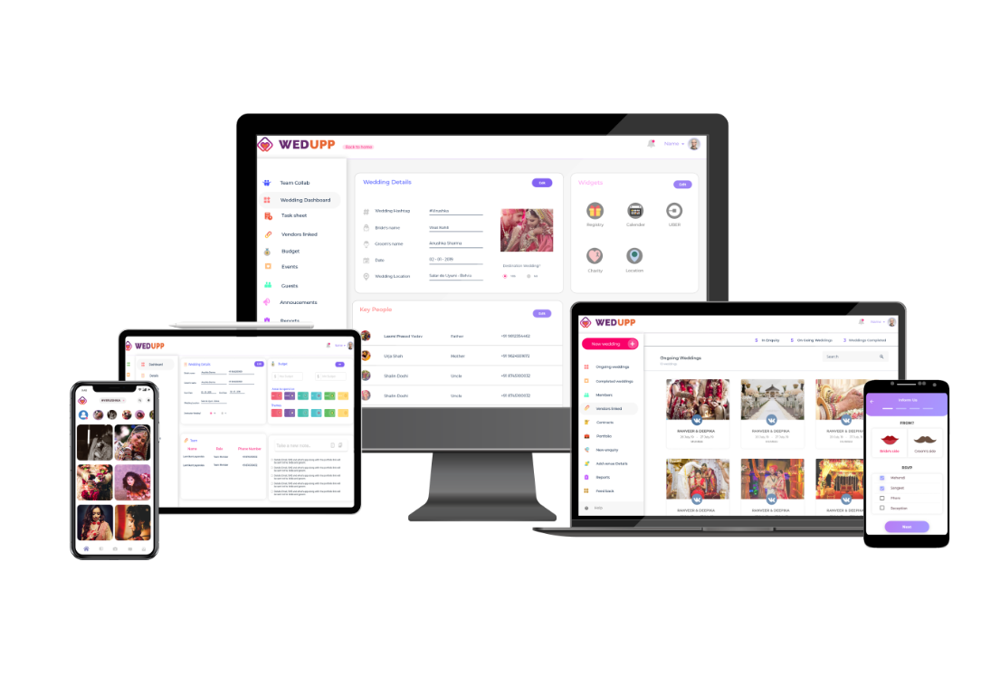
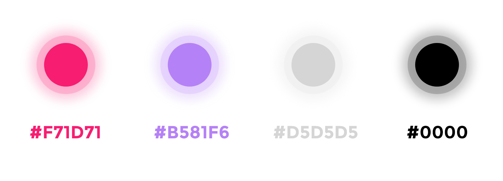
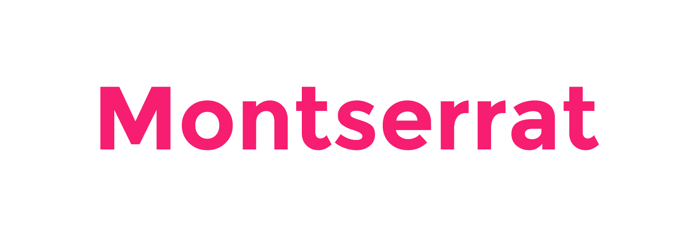

Wedupp

Overview
Wedupp is a B2B and B2C commercial platform which provides services to the wedding planners in the form of an information management portal and a team collaborative platform. Additionally, the company provides a mobile application which is to be used by the people attending the wedding. This application not only enables wedding planners to collect information of the attendees in the weddings but also to manage the guest list by send invitations, collecting RSVP, etc.
Title
UI/UX Design Lead
Duration
February, 2019 - Present
Role
Information Architecture
Interaction Design
GUI Testing
My Role
I work at Wedupp Pvt Ltd. as a UI/UX design Lead. My responsibility has been to revamp the website's and mobile application's user interface and experience. I worked closely with the development team and the founders to develop entirely new information architecture, determine the new colour scheme for the website, design optimized information system for the wedding planners and finally prototyping the interactions with improved usability.
The modules that I worked on are as follows:
- Wedupp mobile application- View
- Wedupp web portal for Wedding Planners
- Wedupp Team collaboration platform
Unfortunately, due to company NDA-contract I cannot share any details regarding the product and its development process. You can visit the website www.wedupp.com to know more about the modules described below. Here are some glimpses of my work:
These are the pictures of the office whiteboard where initially all the features of the application and the portal were jotted down while listening to the client requirements. Later, the user flow was created on the board for the development team to refer. This helped a lot as one could keep track of the flow of the application website. This also helped in the brainstorming sessions and other discussions where the user flow could easily be referred and suggested changes were simultaneously made.

Wireframing
Wireframes of each screen and interaction elements were created by sketching them and then converting them into high fidelity prototypes. This step is essential as it helps the client to visualize the entire concept and suggest changes which can simultaneously be visualized.

Visual Design
- After analysing similar platforms, I found common aspects of interface designs for such applications. This step is necessary because, proposing a new design theme which does not align with the common rules of design or common features would require the user to understand a new concept, which is frustrating.
- The white theme is suitable for this application as there will be many colours involved in the application such as colours in the picture uploaded and colours of the wedding invitations uploaded.
- The application is related to weddings which are supposed to be colourful and bright. As per the request from the client, I had to use bright and cheerful colours. Therefore I chose pink and violet to be the two primary contrasting colours of the application.
- The application should be consistent in terms of the interface and fonts. It should be clear and visible.
Colour Palette
Typography
WEDUPP MOBILE APPLICATION
This is a cross-platform mobile application. The active users of this application are the attendees of the wedding while the indirect users are the wedding planners who collect the data of the wedding guests via the application. I designed 150+ screens and the interactive elements for the application. In the following diagram, a comparison of the old and the new application in terms of the user interface and the information architecture is given. To view the application please visit the link - WEDUPP APPLICATION

What did learn?